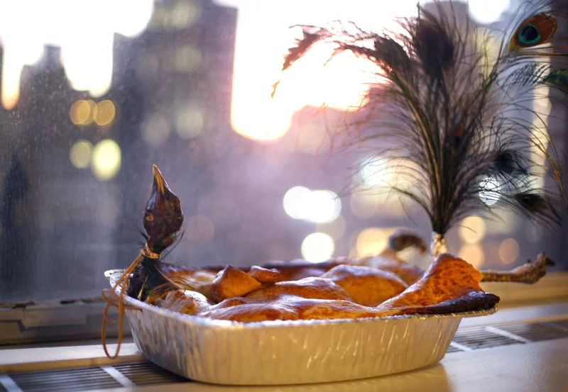

Home
Peacock Pie Recipe
This one is a real crowd pleaser guarenteed to make your
holiday season a extra special.

What You'll Need
- 3/4 cup clear honey
- 1/5 cup water
- 16.5 grams cinnamon
- 10.5 grams ginger
- 6 grams grains of paradise
- 3 grams nutmeg
- 3 grams galangal
- 3 grams saffron, or less
- 1 gram black pepper
- 1 bottle (750 ml) dry white wine (for drinking)
The Rub
- Pluck and gut the bird
- Mix the liquids and boil until blended well
- Mix the solids then combine with the liquids
The result should be a muddy texture
- Dunk the bird in the sauce until covered well
- Bake at 350 for 20 minutes per lb
- Jiggle the leg to make absolutly sure it's dead

Real recipe here